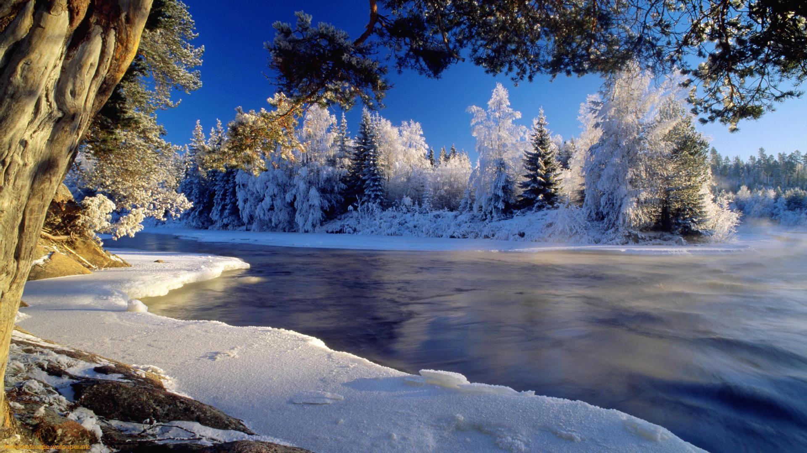

În fund, pe cer albastru, în zarea depărtată, La răsărit, sub soare, un negru punct s-arată! E cocostârcul tainic în lume călător, Al primăverii dulce iubit prevestitor.
Vino, vino, dragă vară Noi cu drag te aşteptam De cu zori şi până-n seară Tot pe-afară să zburăm!
Vezi, rândunelele se duc, Se scutur frunzele de nuc, S-aşează bruma peste vii – De ce nu-mi vii, de ce nu-mi vii?
Colinde, colinde, E vremea colindelor, Căci ghiaţa se ‘ntinde Asemeni oglinzilor. Şi tremură brazii Mişcând ramurele, Căci noaptea de azi-i Când scântee stelele.
